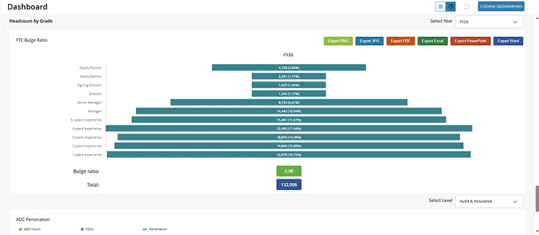
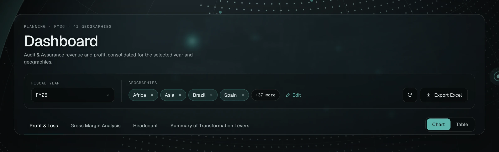

Decision 01
Countries stay visible on the dashboard
The problem
Countries were chosen on a separate step and disappeared once the dashboard loaded.
Before

After

Why
The selection now lives in the dashboard header as chips, with Edit next to them. Users see what the numbers include and change it in place, without going back.